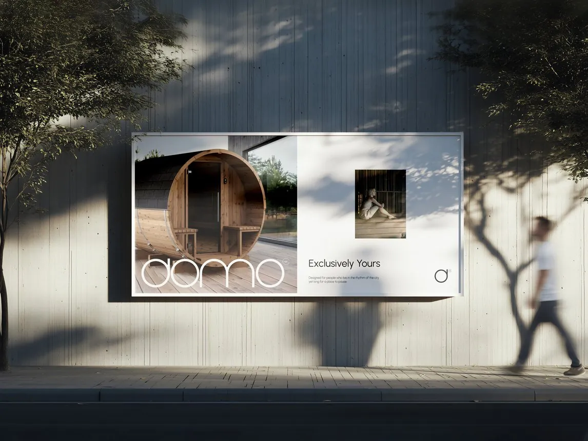
DOMO WOODCRAFT Ne pabėgti iš miesto. Sustoti jame.
Miestas turi savo ritualus. Rytas prasideda dvigubu espresso pakeliui į darbą. Susitikimai keičia vienas kitą. Pietūs kavinėje už kampo. Žvilgsnis pro langą į judančią gatvę. Vakare grįžti namo. Uždarai duris. Ir prasideda visai kitas ritualas.
Karštis. Tyla. Vanduo. Garas.
Trumpa pauzė prieš rytojų.
Šis identitetas gimė iš klausimo, kaip vizualiai perteikti ne pirtį, o akimirką, kai miesto ritmas trumpam nutyla. Atsakymo ieškojau ne tradicinėje pirties estetikoje, o pačiame sustojime. Norėjosi sukurti vizualinę kalbą, kuri ne šaukia, o kviečia sulėtėti. Todėl identitetas išliko santūrus. Daug erdvės. Aiški tipografija. Ramus ritmas. Fotografija, kurioje svarbiau atmosfera nei pats produktas. Ne tam, kad dizainas liktų nepastebėtas. Tam, kad jis leistų atsiskleisti tam, dėl ko šis projektas ir buvo sukurtas – trumpam sugrįžti į save, kad rytoj vėl norėtųsi įsilieti į miesto ritmą.
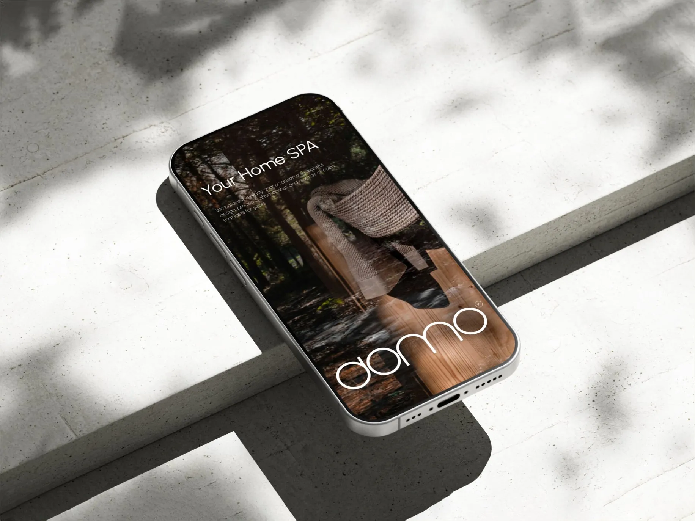
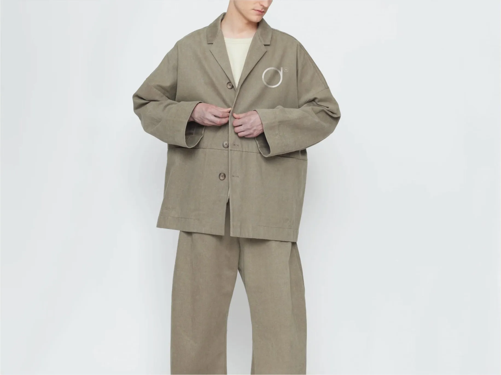
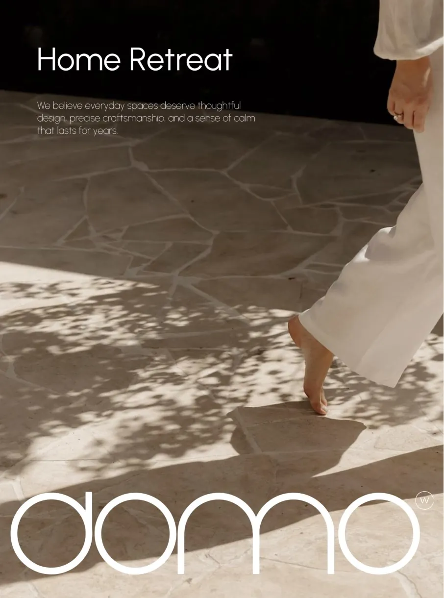
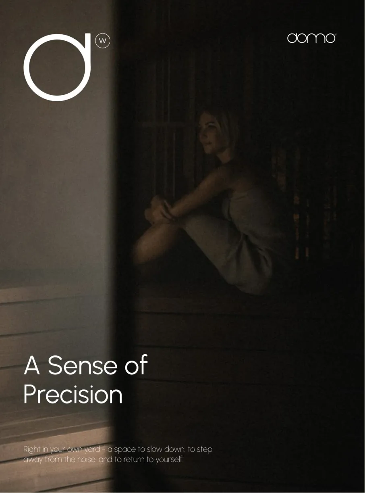
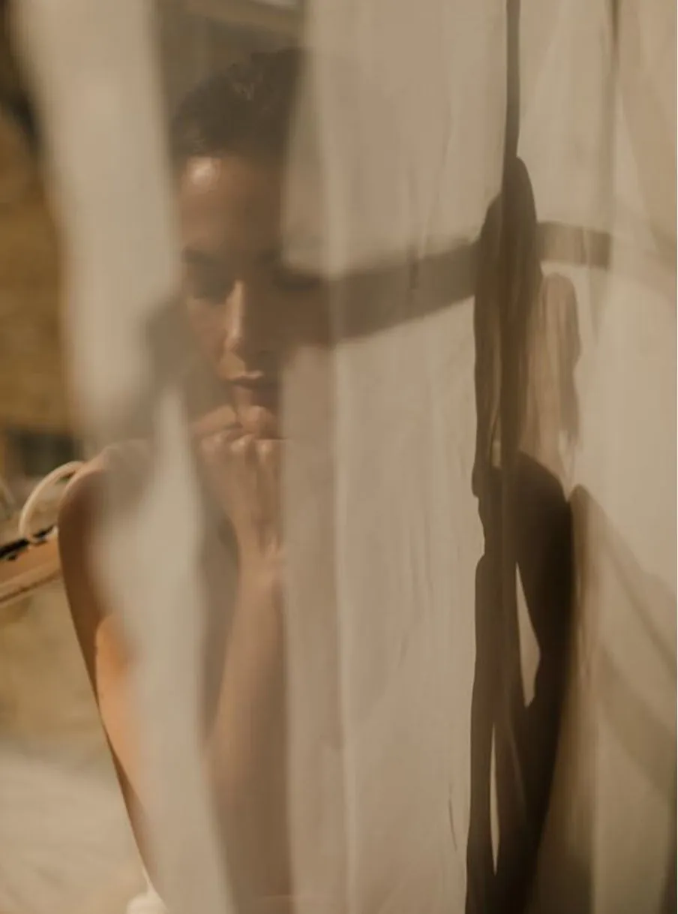
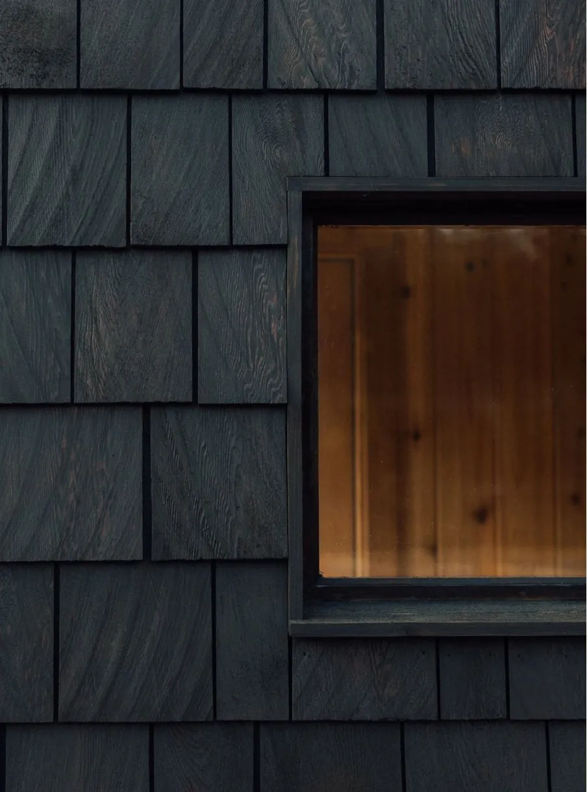
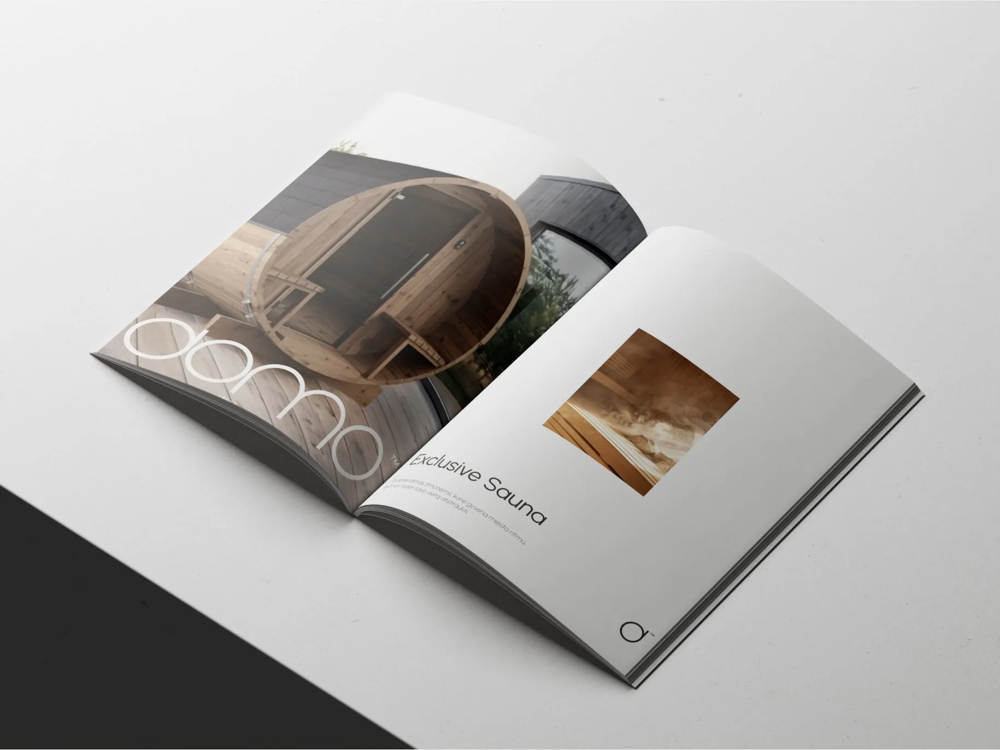
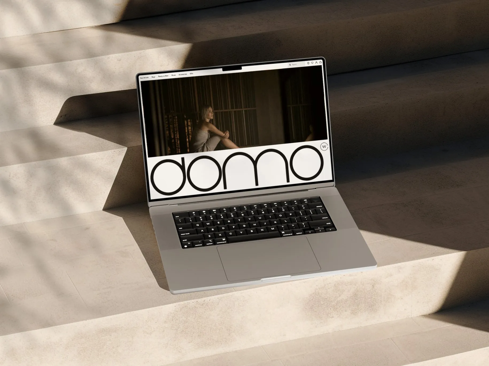
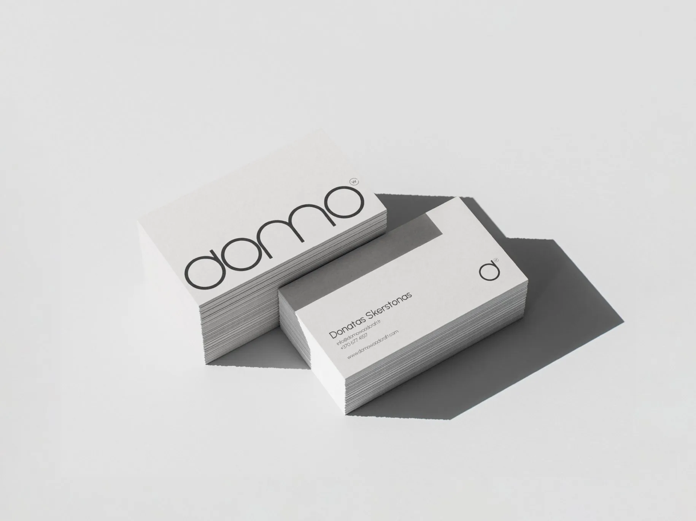
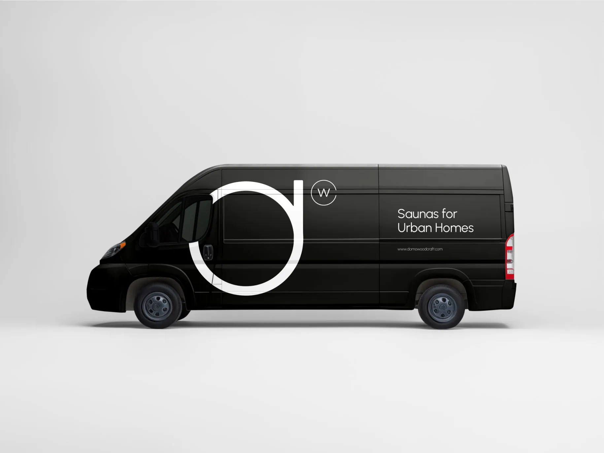
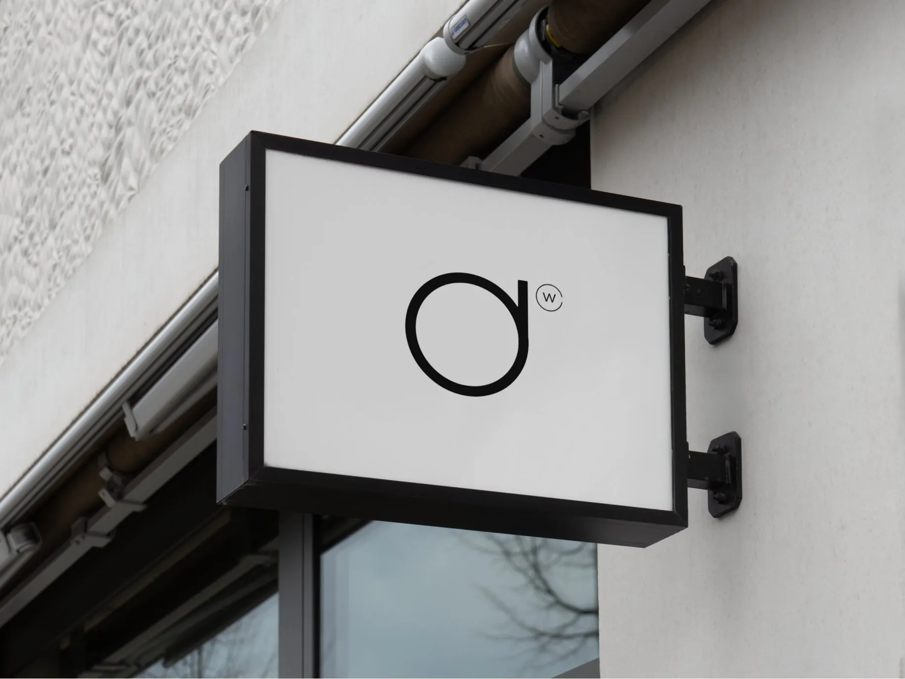